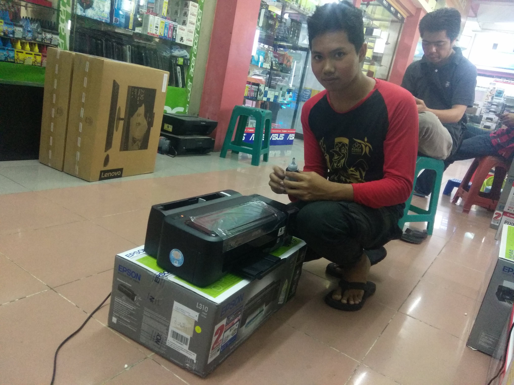
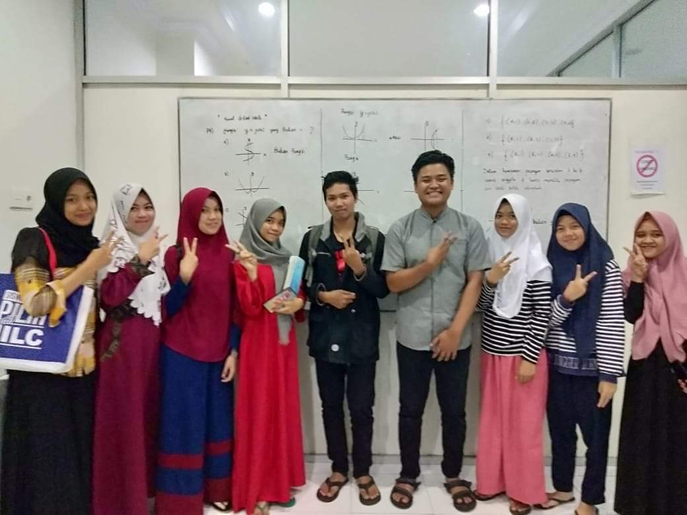

Aktivitas yang pernah saya ikuti dan kerjakan
1. Unit Produksi TKJ

Saya bergabung di organisasi ini pada saat kelas 1 semester 2 di SMKN 1 Luwu utara, tujuan organisasi ini adalah untuk mengelola dan mengurus lab komputer tkj. Anggotanya di pilih langsung oleh guru, siswa yang anggap bisa di percaya, rajin dan kompoten akan dipilih menjadi anggota dari unit produksi tkj.
Disini kami membantu guru untuk mengurus lab, misalnya memperbaiki komputer yang bermasalah, menginstall sistem operasi dan aplikasi yang di butuhkan dalam pembelajaran, membersikan dan merapikan peralatan di lab komputer.
Kami juga membuka usaha percetakan seperti print, cetak foto, dll di sekolah jadi siswa bisa lebih mudah mengakses tempat percetakan, kemudian hasil dari usaha tersebut di gunakan untuk membeli peralatan-peralatan baru di lab komputer.
Untungnya sebagai anggota unit produksi adalah kami diberikan akses wifi internet di lab komputer
2. Pengenalan Lingkungan Kerja (PKL)
Setiap Siswa SMK di wajibkan melakukan PKL agar dapat beradabtasi dan mengetahui seperti apa itu dunia kerja, saya melakukan PKL di makassar tepatnya di Computer City toko Zuy Komputer. Di tempat ini saya banyak melakukan kegiatan seperti berjualan, service printer, rakit komputer dan mengantar barang.
3. Bimbingan belajar JILC
Saya pernah mengikuti bimbingan belajar di JILC Perintis Makassar, dalam rangka persiapan SBMNPTN tahun 2019. Saya memilih belajar di kelas SAINTEK untuk mendaftar jurusan Teknik Infomatika, saya tidak lulus di jurusan tersebut karena banyaknya persaingan, tetapi berhasil lulus di pilihan kedua jurusan Mekatronika di UNM. Saya tidak jadi mengambilnya karena memang saya ingin belajar di jurusan Teknik Informatika, jadi saya memutuskan untuk mendaftar di perguruan tinggi STMIK Dipanegara